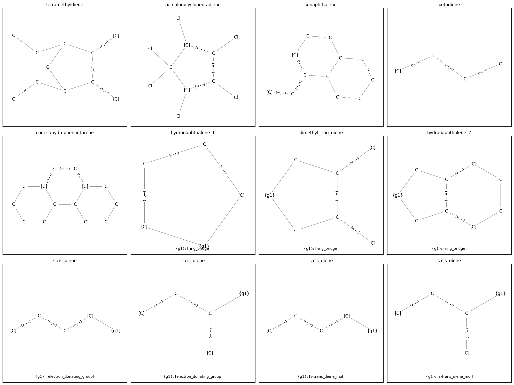
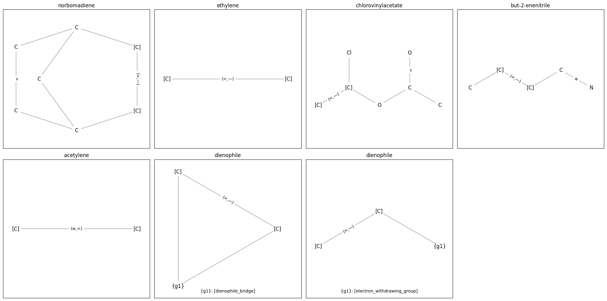
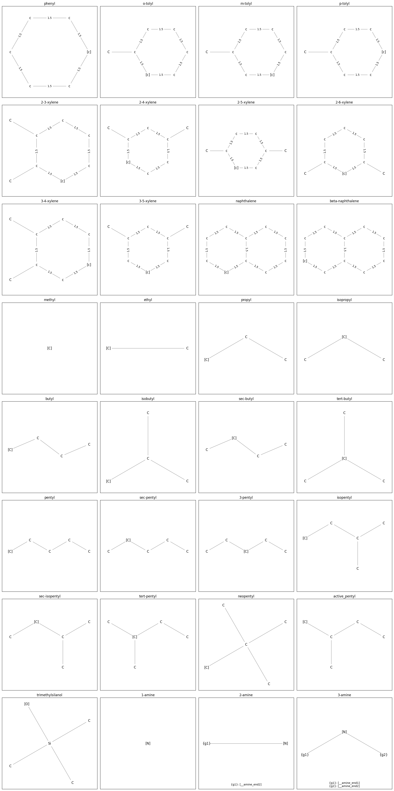
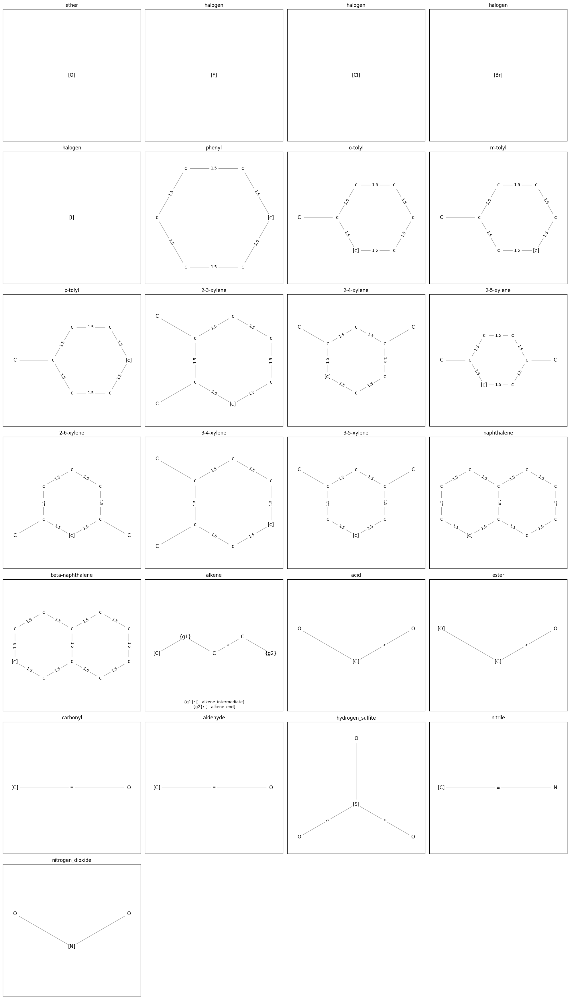
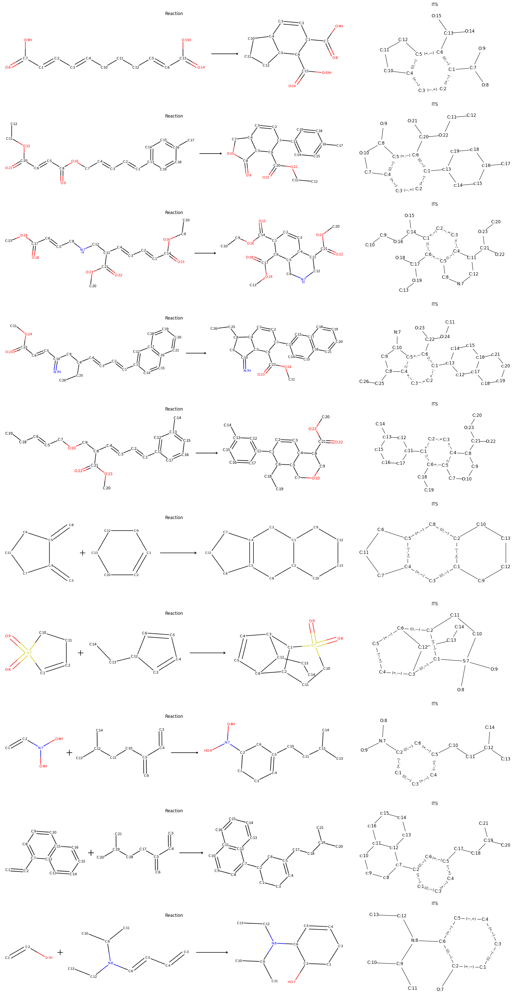
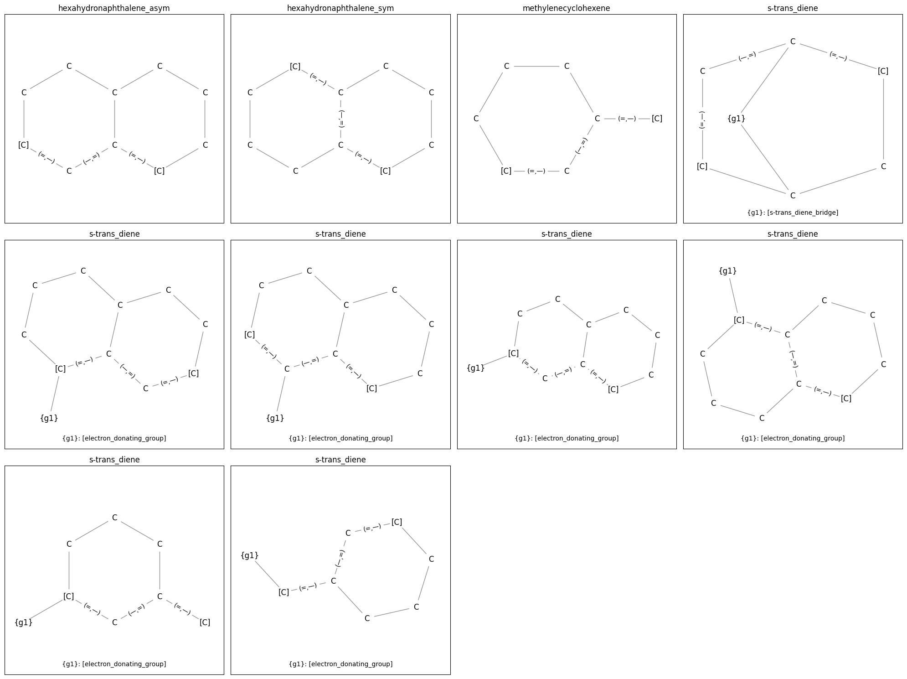
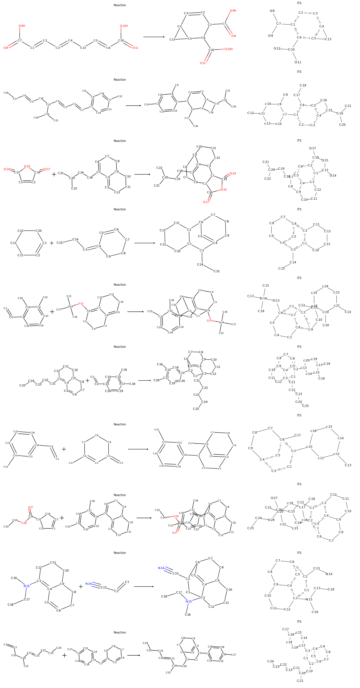

Proxy Collection
Diels-Alder Reaction Proxy
The class
DielsAlderProxy
implements a comprehensive Diels-Alder reaction generation proxy. It generates
ring formation reaction samples between diene and dienophile molecules. It can
also be used to generate negative reaction samples, i.e., reactions where a
Diels-Alder graph transformation rule is theoretically applicable but the
reaction will never happen in reality.
The Diels-Alder Reaction proxy has the following reaction center graphs
configured (ProxyGraphs of the core ProxyGroup). Node labels show the atom
type or group name and the node index and edge labels depict the bond type.
Bond changes are depicted as tuples (<bond_g>,<bond_h>) where the first
entry is the bond in the reactants and the second entry is the bond in the
product.
{kind=link}
The Intra Molecular Center is used to generate intra molecular Diels-Alder reactions. It depicts the entire reaction center. It’s easy to identify the [4 + 2] cycloaddition reaction center between the diene part (C=CC=C, node 0-3) and the dienophile part (C=C, node 5-6). Diene and dienophile are connected by node 4, a graph from the intra_mol_bridge group. The Inter Molecular Center depicts the abstracted reaction center for inter molecular Diels-Alder reactions.
Note
Have you noticed that the Inter Molecular Center is a multi graph (it
has multiple edges between two vertices)? Molecular graphs are never multi
graphs, the bond order is represented as label on the unique edge between
two atoms. However, to represent this abstract form of the reaction center
it’s necessary to have independent edges for both single bond formations.
To parse this type of graphs you must set the use_multigraph=True
argument in Parser.
The next level of abstraction are the diene and dienophile ProxyGroups.
They provide the structures depicted in the following two figures,
respectively. Anchor nodes, the nodes where the substructures connect to the
parent, are surrounded by [].
Graphs from the diene group:
{kind=link}
Graphs from the dienophile group:
{kind=link}
Graphs from the electron_donating_group:
{kind=link}
Graphs from the electron_withdrawing_group:
{kind=link}
A few of the 10470 Diels-Alder reactions generated by the proxy:
{kind=link}
Invalid Sample Generation (negative data)
The DielsAlderProxy
provides the functionality to generate Diels-Alder counter examples, i.e.,
reactions where based on the structure a Diels-Alder graph transformation rule
would be applicable but the reaction can not happen because the diene is for
example in a fixed s-trans conformation.
Graphs from the (s-trans) diene group:
{kind=link}
A few of the 12875 INVALID Diels-Alder reactions generated by the proxy (negative data):
{kind=link}